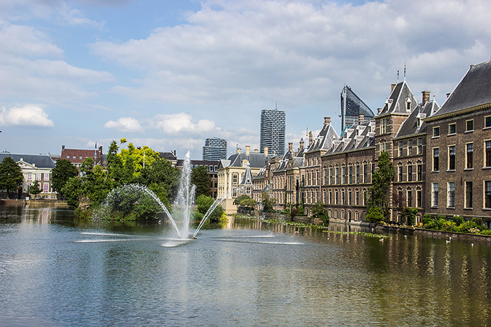

Introductie
Het kantoor Van der Meer & Van den Bosch is in 2020 opgericht door Hendrik van den Bosch en Mr Julia van der Meer. Het kantoor is in de loop der jaren wegens het steeds toenemende aantal zaken en cliënten gegroeid en er zijn nu vier advocaten werkzaam op uiteenlopende rechtsgebieden.
Onze visie
Al onze advocaten worden geleid door maar één belang, en dat is het belang van onze cliënt. Wij streven naar uitstekende juridische dienstverlening en het beste resultaat in alle zaken. Daarbij voorzien onze advocaten de cliënt van duidelijk en concreet advies, en wordt in een zo vroeg mogelijk stadium de strategie bepaald. De advocaten die zijn verbonden aan het kantoor zijn alle geselecteerd op basis van hun bijzondere expertise en ervaring. Kwaliteit staat bij ons zeer hoog in het vaandel, en dit vertaalt zich in een succesvolle behartiging van de belangen van onze cliënten.
Historie
Het kantoor was in de begintijd gevestigd in buiten het centrum, en is nu gevestigd in het karakteristieke en sfeervolle pand aan de Raamstraat in het centrum Den Haag.
